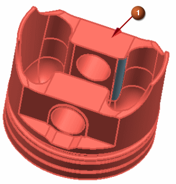
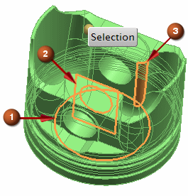

Sew sheet bodies
You created three new sheet bodies for the problem regions. They can be seen in the Part Navigator and you can check for sheet boundaries to reveal the edges that are still uneven. Use the Sew command to sew the edges together and create the solid body.
Sew (Feature group)
-



In the Sew dialog box, the Select Sheet Body line under the Tool group is selected automatically.
-



These are the three new sheet bodies you created.
-
OK
In the Part Navigator, you can see that the sheet bodies have been combined into a single solid body.
|
|
 Reference Sets
Reference Sets Save (Quick Access toolbar)
Save (Quick Access toolbar)